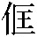
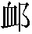

太原宗子美，從父遊學，流寓廣陵。 「廣陵」：二十四卷本作「廣寧」。父與紅橋下林嫗有素。〔馮評〕衹平平説來，入後卻有許多奇異。一日，父子過紅橋，遇之，固請過諸其家。瀹茗共話，有女在旁，殊色也，翁亟贊之，嫗顧宗曰：「大郎温婉如處子，福相也。若不鄙棄，便奉箕帚，如何？」翁笑，促子離席，使拜嫗， 「鄙棄」：異史本作「相鄙」。今據參校本改。「翁笑促」：青本、黄本作「翁促」。鑄本「拜嫗」作「拜媪」。曰：「一言千金矣！」〔何評〕戲語如畫。先是，嫗獨居，女忽自至，告訴孤苦。問其小字，則名嫦娥。〔馮評〕月中嫦娥之説，始於淮南子，因「常儀」二字而誤也。古者羲和占日，常儀占月，皆官名，吕氏春秋言之。「儀」字古皆音俄，故「常儀」誤作「嫦娥」。○愚謂七夕牛女，月中嫦娥，人借作詩文用，似不必泥。嫗愛而留之，實將奇貨居之也。是時宗年十四， 「是時」：鑄本作「時」。睨女竊喜，意翁必媒定之，而翁歸若忘；心灼熱，隱以白母。翁聞而笑曰：「曩與貪婆子戲耳。彼不知將賣黄金幾何矣， 二十四卷本「隱以」作「隱」，「貪」作「貧」。鑄本無「聞而」。「黄金」：異史本作「金」，二十四卷本作「萬金」，今據青本、黄本補。此何可易言！」逾年，翁媪並卒。子美不能忘情嫦娥，服將闋， 「服將闋」：黄本無。託人示意林嫗。嫗初不承，宗忿曰：「我生平不輕折腰， 折腰：〔吕註〕晉書·陶潛傳：「以爲彭澤令，郡遣都郵至縣，吏白應束帶見之，潛嘆曰：『吾不能爲五斗米折腰，拳拳事鄉里小人。』義熙二年解印去。」 「不輕折」：青本、黄本作「不能輕折」。何媪視之不值一錢？ 不值一錢：〔吕註〕史記·灌夫傳：「時武安不肯行酒，次至臨汝侯。臨汝侯方與程不議耳語，又不避席。夫無所發怒，乃駡臨汝侯曰：『生平毁程不識不值一錢，今日長者爲壽，乃效女兒呫囁耳語！』」若負前盟，須見還也！」〔但評〕凡人之輕折腰而自視不值錢者，人即負之，亦不要還也。嫗乃云：「曩或與而翁戲約，容有之，但無成言，即都忘卻。 「即都」：鑄本作「遂都」。今既云云，我豈留嫁天王耶？要日日裝束，實望易千金；今請半焉，可乎？」宗自度難辦，亦遂置之。適有寡媪僦居西鄰，有女及笄，小名顛當。〔馮評〕顛當，爾雅謂之王蛈蜴，鬼谷子謂之蛈鬼。諺云：「顛當牢守門。」○顛當，蜘蛛一種，穴居，布糿穴口，有蓋，一名螲蟷。偶窺之，雅麗不减嫦娥；向慕之，每以饋遺階進。久之漸熟， 「久之」：鑄本作「久而」。往往送情以目，而欲語無間。一夕，逾垣乞火，宗喜挽之，遂相燕好。約爲嫁娶，辭以兄負販未歸。由此蹈隙往來，形跡周密。 「形跡」：異史本、二十四卷本作「影跡」。今據青本、黄本、鑄本改。一日，偶經紅橋，見嫦娥適在門内，疾趨過之。嫦娥望見，招之以手，宗駐足；女又招之，遂入。女以背約讓宗，宗述其故。女便入室， 「女便入」：青本作「便入」。鑄本作「女入」。取黄金一鋌付之。宗不受，辭曰：「自分永與卿絶，遂他有所約。 「約」：青本、黄本、二十四卷本作「要」。受金而爲卿謀，是負人也；受金而不爲卿謀，是負卿也：誠不敢有所負。」〔但評〕人必不自負，而后不肯負人；負人者，即自負也。誠篤語不可多得。女默良久曰 「女默」：鑄本作「女」。：「君所約妾頗知之。其事必無成；即令成之， 「即令」：鑄本作「即」。妾不怨君之負心也。其速行，媪將至矣。」宗倉卒無以自主，受之而歸。心緒勃亂，進退罔知所從。隔夜以告顛當，顛當深然其言，但勸宗專意嫦娥，宗不語；顛當願下之，宗乃悦。 此上三十八字：鑄本無「心緒勃亂，進退罔知所從」十字，「以告」作「告之」，「專意」作「專心」，「宗乃」作「而宗乃」；「顛當願之下」：青本、黄本無「顛當」。即遣媒納金林嫗，嫗無辭，以嫦娥歸宗。入門後，悉述顛當言。嫦娥微笑，陽慫惥之。宗喜，急欲一白顛當，而顛當跡久絶。嫦娥知其爲己，因暫歸寧，故予之間， 「予」：二十四卷本作「與」。囑宗竊其佩囊。〔馮評〕此卻用捷筆，一句便拍合，以許多曲折在下文也。已而顛當果至，與商所謀，但言勿急。既而解衿狎笑， 「既而解衿」：鑄本作「及解衿」，青本、黄本作「既而解衣」。脅下有紫荷囊，將便摘取。女覺之， 「女覺之」：鑄本作「顛當」。變色起，曰：「君與人一心，而與妾二。〔但評〕簡括。負心郎！請從此絶。」宗屈意挽解，不聽，竟去。一日，過門探察之， 「過門」：鑄本作「過其門」。已另有吴客僦居其中，〔馮評〕忽離。蓋顛當子母徙去已久， 鑄本無「蓋」字，「從去」作「遷去」。影滅跡絶，莫可問訊，怨嘆而已。 「怨嘆而已」：鑄本無。宗自娶嫦娥，家暴富，連閣長廊，彌亘街路。嫦娥善諧謔，適見美人畫卷，宗曰：「吾自謂如卿天下無兩，但不曾見飛燕、楊妃 飛燕、楊妃：〔吕註〕綱鑒·漢成帝紀：「帝過陽阿主家，悦歌舞者趙飛燕，召入宫，大幸。」○唐明皇紀：「明皇納壽王妃楊氏爲貴妃。」耳。」女笑曰：「若欲見之，即亦不難。」 「即亦不」：鑄本作「此亦何」。乃執卷細審一過，便趨入室，對鏡修裝，效飛燕舞風， 飛燕舞風：〔吕註〕見花神（絳妃）「掌上留裙」註。既又學楊妃帶醉。 楊妃帶醉：〔吕註〕見勞山道士「霓裳舞」註。 「既又」：鑄本作「又」。長短肥瘦，隨時變更；風情意態， 「意態」：鑄本作「態度」。對卷逼真。〔但評〕爲下文作勢，故此處極力鋪排，惟恐説不到十二分絢爛也。方作態時，有婢自外至，不復能識，驚問其僚；既而審注，恍然始笑。宗喜曰：「吾得一美人，而千古之美人，皆在牀闥 牀闥：〔何註〕闥，門也。牀闥，言閫内也。矣！」〔但評〕譬諸長夏英華，發洩盡矣。一夜，方熟寢，數人撬扉而入，火光射壁。女急起，驚言：「盗入！」宗初醒，即欲鳴呼，一人以白刃加頸，懼不敢喘；又一人掠嫦娥負背上，鬨然而去，〔但評〕倏去。〔馮評〕又作此驚人之筆。〔但評〕託寇劫而去，亦陽極陰生之見耳。宗始號。家役畢集，室中珍玩，無少亡者。宗大悲，惘然失圖， 「惘然」：青本、黄本作「恇然」。無復情地，告官追捕，殊無音息。荏苒三四年，鬱鬱常不聊賴， 「不聊賴」：鑄本作「無聊」。因假赴試入都。居半載，占驗詢察，靡計不施。 「靡」：鑄本作「無」。偶過姚巷，值一女子，〔馮評〕忽合。垢面敝衣

儴如丐。停趾相之，顛當也 「敝」：異史本作「嬴」，二十四卷本作「羸」，今據青本、黄本、鑄本改，「儴」二十四卷本、黄本作「匡襄」。「顛當」：鑄本作「乃顛當」。。〔何評〕倏來。駭曰：「卿何憔悴至此？」答云：「别後南遷，老母即世，爲惡人掠賣旗下， 「答云」：二十四卷本作「答曰」。「即」：鑄本作「既」。「旗下」：青柯亭系統各本，除初刻本外均作「富室」。撻辱凍餒，所不忍言。」宗泣下，問：「可贖否？」曰：「難矣。恐耗費煩多， 「恐耗」：鑄本作「耗」。不能爲力。」宗曰：「實告卿：年來頗稱小有，惜客中資斧有限，傾裝貨馬，所不敢辭。如所需過奢，當歸家營辦之。」女約明日出西城， 「女約明日」：青本、黄本作「約明日」。相會叢柳下，囑獨往，勿以人從。宗諾之。 「諾之」：鑄本作「曰諾」。次日早往，則女先在，袿衣 袿衣：〔何註〕袿音圭，婦人上服也。後漢書·皇后紀：「簪珥光彩，袿裳鮮明。」張華白紵歌：「羅袿徐轉紅袖揚。」鮮明，大非前狀。驚問之，笑曰：「曩試君心耳，幸綈袍之意猶存。〔但評〕今之以勢分交者，前後異位，則反眼若不相識，烏知綈袍。請至敝廬，宜必得當以報。」 得當以報：〔吕註〕前漢書·李陵傳：「身雖陷敗，然其所摧敗，亦足暴於天下。彼之不死，宜欲得當以報漢也。」註：「言欲立功以當其罪也。」北行數武，即至其家，遂出肴酒， 二十四卷本「宜」作「誼」。「數武」：異史本、二十四卷本作「步武」，今據青本、黄本、鑄本改。「肴酒」：黄本作「酒肴」。相與談讌。宗約與俱歸，女曰：「妾多俗累，不能終從。 「不能終從」：青本、鑄本無「終」字。嫦娥消息，固頗聞之。」〔馮評〕忽又串到嫦娥，俶佹之筆，炫人心目。宗急詢其何所。 「詢其」：二十四卷本作「詢」。女曰：「其行踪縹緲，妾亦不能深悉；西山有老尼，一目眇，問之當自知。」遂止宿其家。天明示以徑。宗至其處，有古寺，周墉盡頹；叢竹内有茅屋半間，老尼綴衲 綴衲：〔何註〕綴，補綴。衲，僧衣也。其中，睹客至， 此上二十一字：鑄本「周墉」作「周垣」，「睹客」作「見客」；「綴衲」：黄本作「補衲」。漫不爲禮。宗揖之，尼始舉頭致問。因告姓氏， 「因告」：鑄本作「固告」。即白所求。〔馮評〕簡句。尼曰：「八十老瞽，與世暌絶，何處知佳人消息？」宗固求之。氣益下， 「氣益下」：鑄本無此三字。乃曰：「我實不知。有二三戚屬，來夕相遇，或小女子輩識之，未可知。汝明夕可來。」宗乃出。次日再至，則尼他出，敗扉扃焉；伺之既久，更漏已催，明月高揭，夜烏悲啼，恇懼無所復之。方徘徊際，遥見二三女郎自外入，則嫦娥在焉。〔馮評〕忽又隨風飄至。宗喜極，突起，急攬其袪， 攬袪：〔何註〕捉其襟也。嫦娥曰：「莽郎君！嚇煞妾矣！可恨顛當饒舌，乃教情欲纏人。」宗曳坐，執手款曲，歷訴艱難，不覺惻楚。女曰：「實相告：妾實姮娥被謫， 「夜烏悲啼。恇懼無所復之，方徘徊際」：鑄本爲「徘徊無計」四字；二十四卷本「際」作「間」，「姮」作「嫦」，並異史本「烏」作「鳥」，「際」作「間」；異史本「恇」作」「惟」。今據參校本改。浮沉俗間，其限已滿，託爲寇劫，所以絶君望耳。尼亦王母守府者，妾初譴時，蒙其收
，故暇時常一臨存。君如釋妾，當爲代致顛當。」〔馮評〕東澗水流西澗水，南山雲起北山雲，文字串插之妙，總摸捉不安。宗不聽，垂首隕涕。女遥顧曰：「姊妹輩來矣。」宗方四顧，而嫦娥已杳。宗大哭失聲，不欲復活，因解帶自縊。恍惚覺魂已出舍， 「四顧」：二十四卷作「回顧」。「覺魂」：黄本作「魂」，二十四卷本「魂」作「神」。倀倀靡適。俄見嫦娥來，捉而提之， 「倀倀」：青本、黄本作「悵悵」。「靡適」作「靡之」。「提」：鑄本作「投」。足離於地；入寺，取樹上尸推擠之，唤曰：「癡郎，癡郎！嫦娥在此。」忽若夢醒。少定，女恚曰：「顛當賤婢！害妾而殺郎君，我不能恕之也！」下山賃輿而歸，既命家人治裝，乃返身出西城，詣謝顛當；至則舍宇全非，愕嘆而返，竊幸嫦娥不知。入門，嫦娥迎笑曰：「君見顛當耶？」宗愕然不能答。女曰：「君背嫦娥，烏得顛當？〔但評〕處處用連環訣，此處卻用明點。請坐待之，當自至。」未幾，顛當果至，〔馮評〕忽又至。倉皇伏榻下。嫦娥叠指彈之，曰：「小鬼頭陷人不淺哉！」顛當叩頭，但求賒死。 賒死：〔何註〕遲緩也，猶貸死也。易·中孚：「君子以議獄緩死。」亦此意。 「不淺哉」：鑄本作「不淺」。「賒死」：異史本作「赦死」，今據參校本改。嫦娥曰：「推人坑中，而欲脱身天外耶？廣寒十一姑不日下嫁，〔何評〕嫁誰？須綉枕百幅、履百雙，可從我去，相共操作。」顛當恭白：「但求分工，按時齎送。」女不許，謂宗曰：「君若緩頰，即便放卻。」顛當目宗，宗笑不語。〔馮評〕扮演得妙。顛當目怒之，〔但評〕情文相生，神采欲活。乃乞還告家人，許之，遂去。宗問其生平，乃知其西山狐也，買輿待之。次日果來，遂俱歸。或有問者，宗詭對之。 「或有問者，宗詭對之」：鑄本無此八字。然嫦娥重來恒持重，不輕諧笑。〔但評〕不得已乃來耳，悔且不及，敢蹈前轍乎？〔馮評〕又變。宗强使狎戲，惟密教顛當爲之。〔但評〕此則咎有所歸矣。顛當慧絶，工媚。嫦娥樂獨宿，每辭不當夕。一夜，漏三下，猶聞顛當房中吃吃不絶，使婢竊聽之。婢還，不以告，但請夫人自往。伏窗一窺， 「一窺」：鑄本作「窺之」。則見顛當凝妝作己狀，宗擁抱，呼以嫦娥。女哂而退。未幾，顛當心暴痛，急披衣， 「披衣」：異史本、二十四卷本作「褫衣」，今據青本、黄本、二十四卷本改。曳宗詣嫦娥所，入門便伏。嫦娥曰：「我豈醫巫厭勝 厭勝：〔吕註〕前漢書·武帝紀：「皇后陳氏以祠祭厭勝。」註：「后忌衛子夫得幸，乃祈神爲佑，以厭其勝己者。」者也？ 「者耶」：鑄本作「者」，青本、黄本作「者也」。汝自欲捧心傚西子 捧心傚西子：〔何註〕傚，效同。西子，西施也。西子病心痛，捧心而矉，里之醜人見而美之，亦捧心而矉。彼知美矉，而不知所以美。〔吕註〕莊子·天運：「西施病心而矉其里，其里之醜人見之而美之，歸亦捧心而矉其里。其里之富人見之，堅閉門而不出，貧人見之，挈其妻子而去走。彼知矉美而不知矉之所以美。」耳。」顛當頓首，但言知罪。〔但評〕不罪之罪，情真罪當。女曰：「愈矣。」遂起，失笑而去。顛當私謂宗 「謂宗」：二十四卷本作「謂宗曰」。：「吾能使娘子學觀音。」〔馮評〕與前接。按圖學飛燕、太真，又變一番排場，妙不可言。宗不信，因戲相賭。嫦娥每趺坐， 「每趺坐」：異史本、二十四卷本、黄本作「每愛趺坐」。今據青本、鑄本改。眸含若瞑。顛當悄以玉瓶插柳，置几上；自乃垂髮合掌，侍立其側：櫻唇半啟，瓠犀 瓠犀：〔何註〕齒也。〔吕註〕詩·衛風：「齒如瓠犀。」註：「瓠犀，瓠中之子，方正潔白，而比整齊也。」微露，睛不少瞬。宗笑之。嫦娥開眸詰問， 「開眸詰問」：鑄本作「開目問之」。黄本、異史本、二十四卷本「詰」作「始」。顛當曰：「我學龍女侍觀音 龍女侍觀音：〔吕註〕見西遊記。耳。」嫦娥笑駡之， 「當曰」：黄本作「當答云」。「笑駡」：青本作「笑置」。〔但評〕妙於語言，諂諛秘訣。顯者某公，嘗語僚屬曰：「吾生平不喜人奉承。」有對者曰：「古來如中堂者有幾人！」某公笑置之。亦此類也。罰使學童子拜， 童子拜：〔吕註〕見西遊記。〔馮評〕善材五十三參，缺一不可。顛當束髮，四面朝參之， 「四面」：鑄本、異史本、二十四卷本作「遂四面」，今據青本、黄本刪。伏地翻轉，逞諸變態，左右側折，襪能磨乎其耳。 「摩乎其耳」：青本、黄本作「摩乎耳」。嫦娥解頤，坐而蹴之。顛當仰首，口銜鳳鈎，微觸以齒。嫦娥方嬉笑間，忽覺媚情一縷，自足趾而上，直達心舍，意蕩思淫，若不自主， 「若不自主」：二十四卷本作「若不能自主」，鑄本作「若不自主」。〔但評〕受媚而笑，已爲所動矣；迎而逞其技，不奪其心不止也。人鬼關頭，争此幾希耳。〔馮評〕不知能媚姜杞、伯姬否？〔何評〕可知。乃急斂神，呵曰：「狐奴當死！不擇人而惑之耶？」〔但評〕狐媚惑人，亦人之自受其惑耳。願當之者於意蕩思淫，不能自主時，急斂神而攝之，則彼且懼而退矣。顛當懼，釋口投地。嫦娥又厲責之，衆都不解。 此上十七字：二十四卷本無「懼」字，鑄本無「都」字。嫦娥謂宗曰：「顛當狐性不改，適間幾爲其所愚。若非夙根深者，墮落何難矣！」 此上十四字：異史本「其所」作「所凡」，今據青本、黄本、二十四卷本改。鑄本無「其」、「矣」，二十四卷本「愚」作「迷」。自是見顛當，每嚴御之。顛當慚懼，告宗曰：「妾於娘子一肢一體無不親愛，愛之極，不覺媚之甚。〔但評〕凡媚人之甚者，豈必其怨我、仇我，而乃惑我，愚我，而酖毒我、甘心我哉？其初亦衹覺一肢一體，無不親之極、愛之極，遂乃媚之之術，惟恐不精；媚之之事，惟恐不周；媚之之時，惟恐不密；卒之以彼愚癡，致我墮落，荒迷不悟，而傾覆及之。故處女子、小人，不願彼一時親我、愛我、媚我，但願彼終身畏我、服我、敬我。〔何評〕慧絶。謂妾有異心，不惟不敢，抑不忍。」 「親愛，愛」：此用二十四卷本、鑄本。他本作「親愛」。青本、黄本無「謂妾有異心」五字。「抑」：鑄本作「亦」。〔但評〕然則媚人者不惟敢，抑且忍也，受之者何甘受其忍與敢乎？宗因以告嫦娥，嫦娥遇之如初。然以狎戲無節，數戒宗，宗不能聽。 「然以狎戲無節數戒宗，宗不能聽」：鑄本作「然以狎戲無節數戒宗，不聽」，異史本「相狎戲」作「相戲」，今據參校本補。二十四卷本「聽」作「從」。因而大小婢婦，兢相狎戲。一日，二人扶一婢，效作楊妃。二人以目會意，賺婢懈骨作酣態，兩手遽釋；婢暴顛墀下，聲如傾堵。 傾堵：〔何註〕傾，倒也。堵，牆也。衆方大譁，近撫之，而妃子已作馬嵬薨 馬嵬薨：〔何註〕馬嵬，驛名，楊妃死於此。〔吕註〕太真外傳：「上幸巴蜀，妃從；至馬嵬，六軍不解圍。上使力士賜貴妃死，乃縊於佛堂前梨樹下。」矣。〔但評〕趣語天然。衆懼， 「衆懼」：鑄本作「大衆懼」。急白主人，嫦娥驚曰：「祸作矣！我言如何哉？」〔但評〕言信而有徵。往驗之，已不可救。使人告諸其父。 「如何」：二十四卷本作「何如」。鑄本「已不」作「不」，「告諸」作「告」。父某甲，素無行，號奔而至，負尸入廳事，叫駡萬端。宗閉户惴恐， 惴：〔何註〕之瑞切，懼也。莫知所措。嫦娥自出責之，曰：「主即虐婢至死，律無償法；且邂逅暴殂，焉知其不再甦？」 「焉知」：二十四卷本作「烏知」。「主即」：青本、黄本作「主郎」。甲噪言：「四支已冰，焉有生理！」嫦娥曰：「勿譁，縱不活，自有官在。」乃入廳事撫尸，而婢已蘇，曳之隨手而起。嫦娥返身怒曰：「幸婢不死， 此上二十四字：二十四卷本無「事」字，「怒」作「責」。鑄本「蘇」下「曳」作「撫」。青本、黄本無「曳之」二字。「幸婢」：鑄本、黄本、青本作「婢幸」。賊奴何得無状！可以草索縶送官府！」甲無詞，畏跪哀免。嫦娥言：「汝既知罪，暫免究處。小人無賴， 此上十五字：鑄本「暫免」作「姑免」，並二十四卷本「言」作「曰」，「小人」作「但小人」。反復何常，留汝女終爲祸胎，宜即将去。原價若干數，當速爲措置。」 「原價若干數，當速爲措置」：鑄本作「原價如干數，當速措置來」，青本、黄本「若干數」作「若干」。遣人押出，俾浼二三村老，券證署尾。 「署尾」：二十四卷本作「署券」。已，乃唤婢至前，使甲自問之：「無恙乎？」答曰：「無恙。」面後付之以去。已，乃朝諸婢， 此上十五字：鑄本作「答曰無恙，乃付之去。已，遂如諸婢。「朝」：但本作「集」。數責遍扑。又呼顛當，爲之厲禁。 厲禁：〔吕註〕周禮·地官：「山虞掌山林之政令，物爲之厲，而爲之守禁。」註：「厲，遮列也，謂别其地以限之，命其人以守之，設其法以禁之也。」謂宗曰：「今而知爲人上者，一笑顰 笑顰：〔何註〕顰，笑貌。韓昭侯使人藏弊褲，曰：「吾聞明主愛一顰一笑。」亦不可輕。謔端開之自妾，而流弊遂不可止。凡哀者屬陰，樂者屬陽。陽極陰生。〔但評〕爲上者即一無所好，猶恐下之易即於慆淫，况自我開之，其流弊尚可問乎。「陽極陰生」四字，有國家者當奉爲座右箴。○陽極陰生，此理千古不易。凡爲人上者，當敬聽之，以防傾覆之漸；而諂諛獻媚者，亦當奉爲提耳之命，而力求拔脱也。此循環之定數。婢子之禍，是鬼神告之以漸也。荒迷不悟，則傾覆及之矣。」〔馮評〕時出理語，如友朋聚處終日，數語詼諧，不可不終以莊言正論，否則與市儈何異？宗敬聽之。顛當泣求拔脱，嫦娥乃掐其耳，逾刻釋手，顛當憮然爲間，忽若夢醒，據地自投，歡喜欲舞。 「欲舞」：青本、黄本作「歌舞」。由此閨閣清肅，無敢譁者。婢至其家，無疾暴死。甲以贖金莫償， 「贖金莫償」：青本、黄本無「莫償」。浼村老代求憐恕，許之。又以服役之情，施以材木而去。宗常患無子。嫦娥腹中忽聞兒啼，遂以刃破左脅出之， 破脅出子：〔何註〕破脅出子，不徒仙人。老彭母有娠，剖其左脅而三人出焉，剖其右脅而三人出焉。果男；無何，復有身，又破右脅而出一女。男酷類父，女酷類母，皆論昏於世家。異史氏曰：「陽極陰生，至言哉！然室有仙人，幸能極我之樂，消我之災，長我之生，而不我之死。是鄉樂，老焉可矣，而仙人顧憂之耶？天運循環之數，理固宜然；而世之長困而不一亨者， 「困而不一」：鑄本作「固而不」。又何以爲解哉？昔宋人有求仙不得者，每曰：『作一日仙人而死亦無憾。』我不復能笑之也。」
〔但評〕惟仙多情，亦惟仙能制情；惟仙真樂，亦惟仙不極樂，此則文之梗概也。獨怪嫦娥之於宗也，嫗將奇貨居之，宗亦置之而他有所要，此時不去，而付金自贖，不可謂情之不篤也。而且舞效飛燕，醉學楊妃，千古美人，萃之牀榻；乃突然託之寇劫，鬨然徑去。自以情欲纏人，而欲人之不纏之也，得乎？倘謂謫限已滿，不可再留，何以消息潛通，遭逢凑巧，癡郎魂返，遂與同歸？豈小鬼頭果能推人坑中，欲出此而無術哉？况浮沉俗間，更生子女，則限满難留之謂何也？毋亦循環之定數本不可逃，而鑒及於陽極陰生，恐致墮落，欲以顛當自代，而脱身天外耶？至顛當饒舌，幾殺癡郎，萬不得已而偕歸，夫而後以禮制情，安心作室家計耳。若夫顛當，則尤有可異者，於嫦娥之未來，則逾垣就之；約之以嫁娶，則託兄辭之，至告之以嫦娥之言，則又深然之而切勸之。謂其有所畏於嫦娥固已，顧何以佩囊一摘，既變色絶負心郎？而荏苒三四年，又忽垢面敝衣而試之，又忽絓衣鮮明而告之？且已止宿其家矣，所云俗累不能從者何爲？示踪跡以求嫦娥者又何爲？豈真推人坑中，而欲脱身天外耶？不然，何以向人饒舌，而又舍宇全非耶？非顛當烏得嫦娥，背嫦娥烏得顛當！顛當目宗，宗笑不語，意若曰：「綈袍之意猶存，請至敝廬，宜必得當以報矣。」既密教爲狎戲，則狐媚之惑，我實啓之；豈捧心效顰，遂足以懲之而使改哉？馬嵬禍作，輪臺悔萌，賴夙根之堅深，毋至荒迷，幸免傾覆；不特開端罪己，流弊不生，抑且掐耳悟心，當時拔脱。即前此之愛我、親我，不覺媚我，而不敢惑我、不忍愚我者，今且化而敬我、畏我，據地自投，歡喜鼓舞，由此閨閣清肅，無敢譁矣，又焉有媚我之人在其中哉？然吾謂仙人畢竟差聖賢一著：聖賢化人以德，節人以禮，立禁於先事，防患於未然。閑有家而悔亡，假有家而勿恤，毋嘻嘻而失節，自無無妄之灾矣。觀其爲人上者，一笑嚬亦不可輕之言，至禍作而鬼神告之以漸，始恍然悟曰：「今而知……」抑何見事之晚也！
〔何評〕宗子美實心孩子耳，仙狐並愛之，乃知輕脱者固仙人所必棄也。○嫦娥謫滿，猶在人間，未免有情，神仙仍復爾爾。
〔校記〕（底本：異史本 參校本：青本、二十四卷本、鑄本）
本章完!